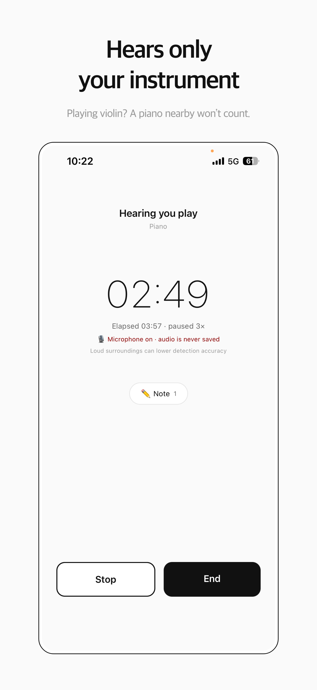

What kinds of practice tracker apps are there?
There are three broad groups, and most apps sit in one of them. The descriptions below come from each app's official site or App Store listing, checked in October 2026.
| App | Group | How practice time is recorded | Also offers |
|---|---|---|---|
| MU:note | Automatic tracker | Automatically — counts only the time your set instrument is playing | Calendar, notes, friends' practice room; iPhone |
| Andante | Timer and log | Live timer, or add sessions manually | Metronome, tuner, audio recorder, streaks |
| Practice by Musopen | Timer and log | Focused practice timer | Goals, streaks, to-dos, repertoire, community |
| Modacity | Planning and recording | Practice timer within planned sessions | Recorder, metronome, playlists, guided deliberate practice |
| Practice Space | Teacher assignments | Practice logs shared with the teacher | Assignments, goals, streaks and badges |
| Better Practice | Teacher assignments | Practice logs and charts, in the browser | Lesson plans, assignments, chat with the teacher |
How does each app record practice time?
There are three ways, and the difference matters more than any other feature.
- A timer you start and stop. Simple and reliable, as long as you remember both taps. The timer keeps running through page turns, breaks and phone checks.
- Manual entry afterwards. Flexible, but it depends on memory, and memory of practice time is unreliable — see why your memory of practice time misleads.
- Automatic detection. The app listens and counts time only while your instrument is playing, so there is nothing to start, stop or remember.
In other words, a stopwatch running for a whole session and the time you actually spent playing are not the same number.
Which app fits which musician?
Start from what you need most:
- Your teacher sets weekly assignments and wants to see your log: a teacher-assignment app such as Practice Space or Better Practice.
- You want to plan each session and record yourself: a planning-and-recording system such as Modacity.
- You want a simple timer, streaks and a repertoire list: a timer-and-log app such as Andante or Practice by Musopen.
- You want practice time recorded without touching your phone, counting only real playing: an automatic tracker such as MU:note.
What makes MU:note different?
MU:note recognizes only the sound of the instrument you set — piano, strings, winds, voice or guitar (acoustic and classical) — and records your net practice time automatically. Page turns, sips of water and short breaks are not counted, and any silence longer than 15 seconds is left out. Sound is analyzed on the phone and discarded right away; nothing is recorded.

It also connects you with friends. In the shared practice room, friends who practiced today appear playing their instruments, and you can send each other reactions — a small push that keeps practice interesting when you are on your own. You choose what friends see, and piece names and notes are never shown to them.
See how MU:note works.
What should you check before choosing?
- How time is recorded — timer, manual entry or automatic.
- Whether audio is recorded or uploaded — check the privacy policy if you practice in shared spaces.
- Which devices it runs on — iPhone, Android, browser.
- How easy it is to look back — calendars and weekly totals make progress visible.
- Whether your teacher needs access — if so, a teacher-assignment app may be the main tool.